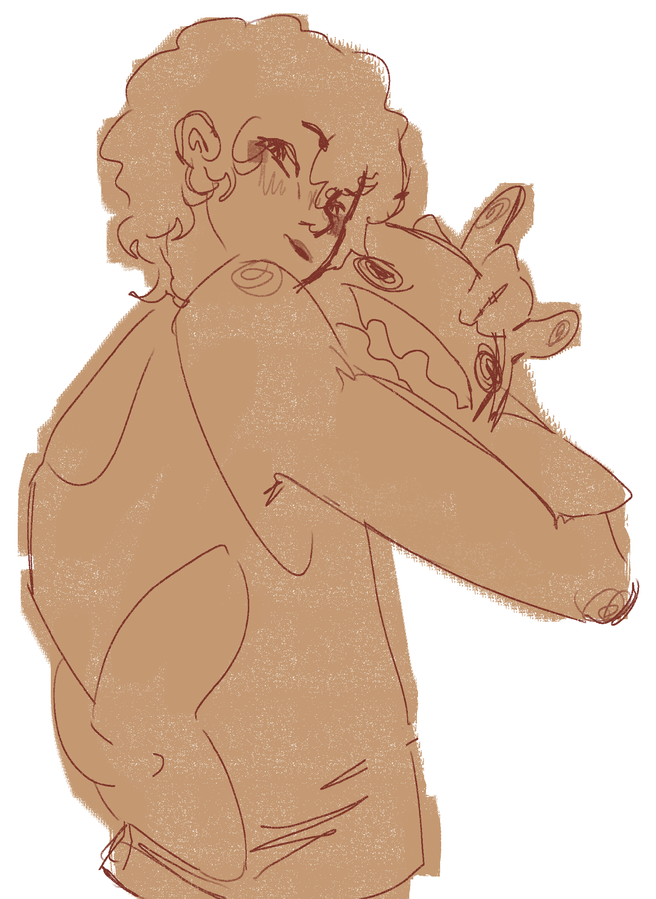
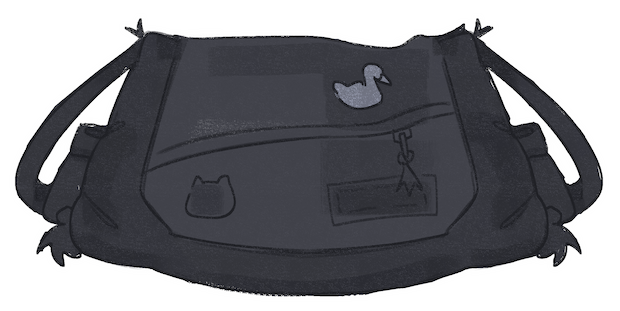
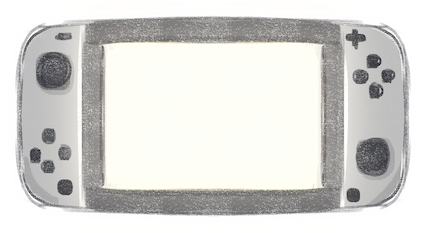
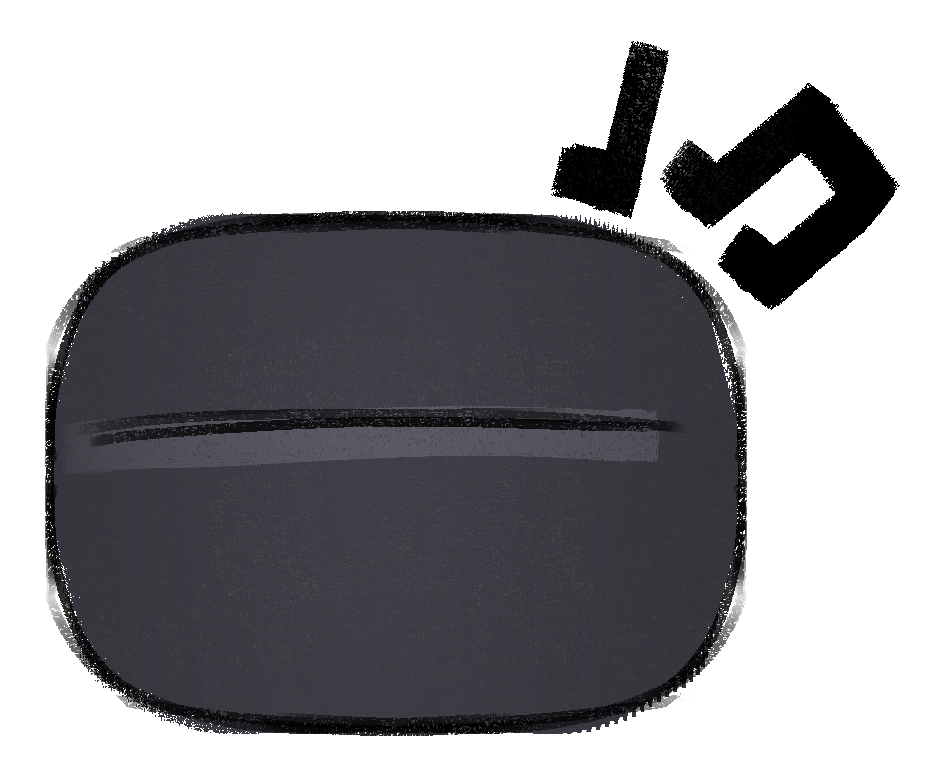

Hello, my name is
Sam!
Sam!




A professional game developer and self-taught artist with a lifelong love for video games.
My journey into game development started when I was just 12 years old. I discovered a bug in Super Mario Galaxy and immediately wondered, "How do people actually make games?" That curiosity led me to Unity, where I started experimenting and learning through YouTube tutorials.
Now, with professional training behind me, I'm ready to turn my passion into my profession!